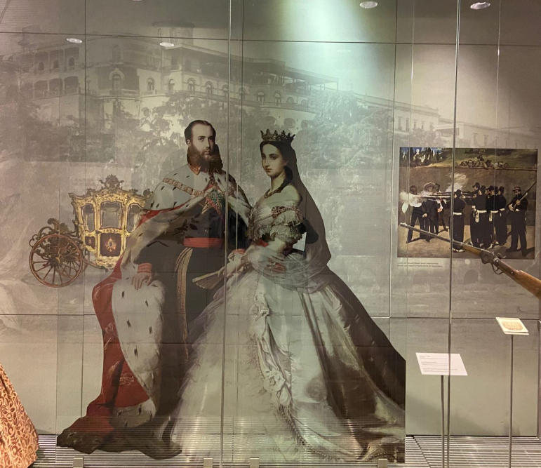
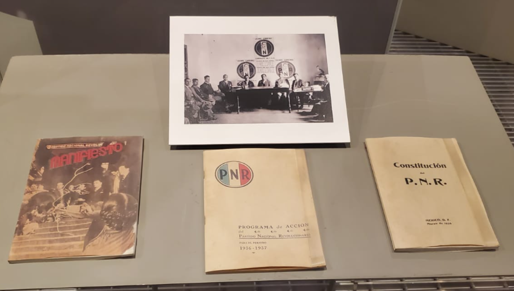
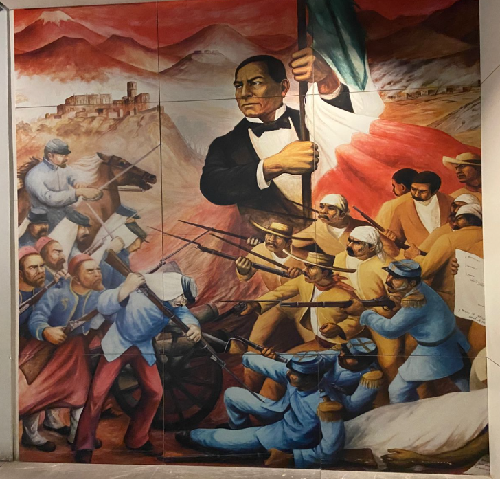

Sala 2 - Consolidación del Estado (1924-1934)
Consolidación del Estado
1924 - 1934
Consumada la Independencia, México se enfrentó al reto de construir una nación desde los escombros del virreinato. Esta sala explora las décadas de aprendizaje político donde se definieron las leyes e instituciones que hoy nos dan identidad.
Tras siglos de dominio español, el país buscó con urgencia una estructura propia. Entre gobiernos efímeros y crisis económicas, se gestaron los primeros esfuerzos por pacificar el territorio y unificar a una población diversa bajo un mismo ideal de patria.
Descubre la pugna por el corazón del poder: ¿quién debía mandar y desde dónde? Analiza cómo los debates legislativos y la resistencia civil ante las potencias del mundo terminaron por consolidar la estructura del Estado mexicano.

Instituciones del nuevo Estado

Pacificación nacional

Consolidación política